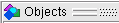

In the Code Coverage Analysis window, you can click the Analysis Type selector to display Statement, Branch, Expression, Condition, FSM, or Toggle coverage (Figure 1).
The Code Coverage Analysis window displays coverage data “by instance” or “by file,” depending on whether the “sim” tab (Structure window) or “Files” tab is active.
The Object, Source, and Structure windows display additional Code Coverage Data. To view coverage data in the Objects window, right click anywhere in the column title bar and select Show All Columns from the popup menu. When you double-click an item in the Code Coverage Analysis window or the Objects window, a Source window opens with the selected item highlighted. For details, see Table 1.
The Structure window displays all subprograms, including Verilog tasks and functions as well as VHDL subprograms. Since VHDL allows multiple subprograms to have the same name but different arguments in the same hierarchical scope, the Structure window displays the argument signature (list of arguments and their types) along with the subprogram name, in order to differentiate overloaded subprogram names. The signature appears in the “design unit” column instead of the design unit name.
The Instance Coverage window also displays subprograms, as well as instances, and their respective code coverage data.
You can also write coverage statistics in different text and HTML reports (see “Coverage Reports”). You can save raw coverage data to a UCDB (see “Code Coverage in the UCDB”) and recall, or merge it with coverage data from previous simulations.
Coverage window |
Description |
|---|---|
Code Coverage Analysis |
Use this window to perform in-depth analysis of incomplete coverage numbers. Pulldown menu options for viewing missed coverage and details: Statement Analysis, Branch Analysis, Condition Analysis, Expression Analysis, Toggle Analysis, FSM Analysis. Displays exclusions with or without comments, missed coverage (anything with less than 100% coverage) for the selected design object or file, as well as details for each object. When the Details window is open, you can click each line to display object details. Refer to “Code Coverage Analysis Window” in the GUI Reference Manual. |
Details |
Displays details of missed statement, branch, condition, expression, toggle, and FSM coverage, as well as exclusions and comments. When you select items in Code Coverage Analysis windows, the details populate this window. Used to perform in-depth analysis of incomplete coverage numbers. Refer to “Coverage Details Window” in the GUI Reference Manual. |
Instance Coverage |
Use this window as the primary navigation tool when exploring code coverage numbers. Displays coverage statistics for each instance. It recursively shows all child instances under the currently selected region in the Structure window. Use this window for analysis based on sorting by coverage numbers. Refer to “Instance Coverage Window” in the GUI Reference Manual. |
Objects  |
Can be used to view and analyze Toggle Coverage. Displays toggle coverage statistics when you right-click any column heading and select Show All Columns. Various columns show the toggle numbers collected for each variable and signal shown in the window. Refer to “Viewing Toggle Coverage Data in the Objects Window”. |
Source |
Most useful for statement and branch coverage analysis. Displays source code for covered items. Refer to “Coverage Data in the Source Window” in the GUI Reference Manual. |
Structure (sim) |
Use this window mainly as a design navigation aid. Displays coverage data and graphs for each design object or file, including coverage from child instances compiled with coverage arguments. By default, the information is displayed recursively. To view coverage by local scopes only, deselect . Columns are available for all types of code coverage. See “Code Coverage in the Structure Window” in the GUI Reference Manual and “Coverage Aggregation in the Structure Window” in this manual. |